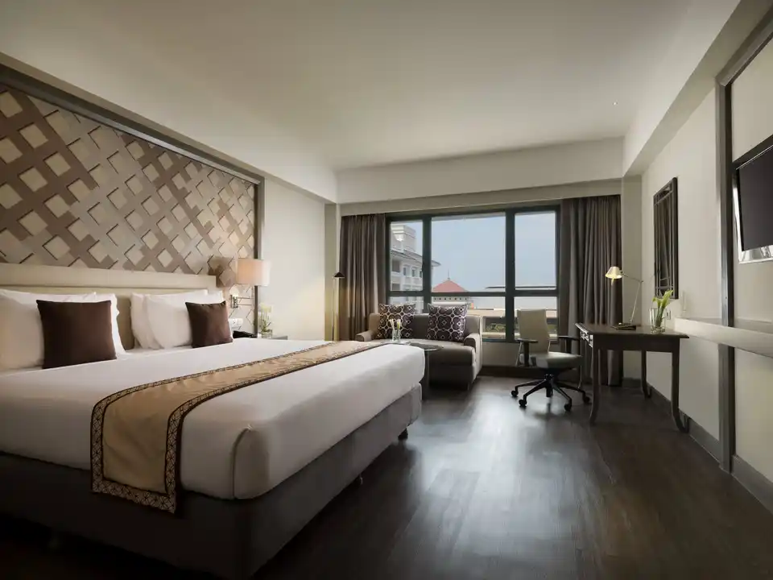
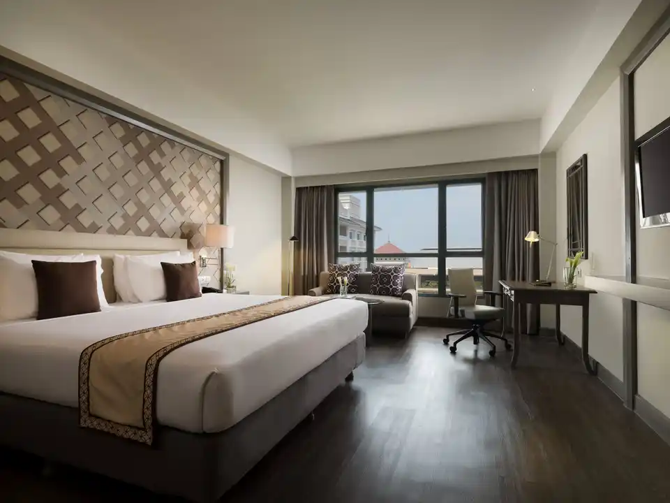

Rekomendasi Hotel Favorite
Berikut beberapa hotel favorit yang dapat Anda pertimbangkan. Hotel-hotel ini menawarkan fasilitas yang nyaman, pelayanan yang ramah, dan lokasi strategis yang memudahkan Anda untuk menjelajahi daerah ini.

Daun Bali Seminyak Hotel
Daun Bali Seminyak Hotel adalah hotel yang terletak di lingkungan yang baik, tepatnya di Seminyak. Hotel ini memiliki lokasi yang sangat baik, juga dekat dengan Bandara Internasional Ngurah Rai, yang hanya berjarak 8,46 km. Hotel ini hanya berjarak 9,55 km dari Pelabuhan Benoa. Tidak hanya memiliki posisi yang strategis, Daun Bali Seminyak Hotel juga dekat dengan Taman Botani Bali dalam jarak 43,97 km dan Air Terjun Nungnung dalam jarak 38,75 km.
Bagi Anda yang ingin bepergian dengan nyaman dengan anggaran terbatas, Daun Bali Seminyak Hotel adalah tempat menginap yang sempurna dengan fasilitas yang baik serta pelayanan yang prima. Mulai dari acara bisnis hingga pertemuan korporat, Daun Bali Seminyak Hotel menyediakan layanan dan fasilitas lengkap yang Anda dan rekan-rekan Anda butuhkan. Nikmati berbagai fasilitas hiburan untuk Anda dan keluarga di Daun Bali Seminyak Hotel, akomodasi yang indah untuk liburan keluarga Anda.
Resepsionis 24 jam siap melayani Anda, mulai dari check-in hingga check-out, atau bantuan apa pun yang Anda butuhkan. Jika Anda menginginkan lebih banyak, jangan ragu untuk menghubungi resepsionis, kami selalu siap melayani Anda. Nikmati hidangan favorit Anda dengan masakan istimewa dari Daun Bali Seminyak Hotel khusus untuk Anda. WiFi tersedia di area umum properti untuk membantu Anda tetap terhubung dengan keluarga dan teman.
Harga: Rp 825.000 per malam
Alamat: Jalan Petitenget no 8 Seminyak,Kerobokan Kelod,Kuta Utara , Seminyak, Kuta, Bali, Indonesia
 

Melia Purosani Yogyakarta
Melia Purosani Yogyakarta terletak di area/kota Jalan Malioboro. Hotel ini terletak di pusat Kota Yogyakarta. Nikmati perjalanan yang nyaman selama 1 jam 20 menit dari YIA (Bandara Internasional Yogyakarta) atau cukup naik Kereta Shuttle selama 40 menit dari bandara ke Stasiun Kereta Tugu - Jadwal kereta menuju bandara tersedia berdasarkan jadwal resmi KAI. Melia Purosani Yogyakarta hanya berjarak 1,8 km atau beberapa menit dari Stasiun Kereta Tugu. Terdapat banyak objek wisata di dekatnya, seperti Jalan Malioboro sejauh 250 meter, dan Istana Sultan sejauh 1,3 km.
Melia Purosani Yogyakarta Terletak secara strategis di pusat kota Yogyakarta. Hanya beberapa langkah Anda akan menemukan objek wisata utama Yogyakarta seperti jalan ikonik Malioboro, Pasar Beringharjo, dan Keraton Sultan. Pelayanan berkualitas terbaik yang mendampingi fasilitas lengkap akan memberikan Anda pengalaman liburan yang tak terlupakan. Nikmati hari yang menyenangkan dan santai di kolam renang, baik Anda bepergian sendiri atau bersama orang terkasih.
Resepsionis 24 jam siap melayani Anda, mulai dari check-in hingga check-out, atau bantuan apa pun yang Anda butuhkan. Jika Anda menginginkan lebih, jangan ragu untuk menghubungi resepsionis, kami selalu siap melayani Anda. Nikmati hidangan favorit Anda dengan masakan istimewa dari Melia Purosani Yogyakarta khusus untuk Anda. WiFi tersedia di area umum properti untuk membantu Anda tetap terhubung dengan keluarga dan teman.
Harga: Rp 1.521.500 per malam
Alamat: Jl. Suryotomo 31, Kawasan Malioboro, Yogyakarta, Malioboro Street, Yogyakarta, Yogyakarta Province, Indonesia, 55122

Hotel Indonesia Kempinski Jakarta
Hotel Indonesia Kempinski Jakarta adalah hotel yang terletak di lingkungan yang baik, tepatnya di Thamrin. Hotel ini hanya berjarak 0,72 km dari Stasiun BNI City. Tidak hanya memiliki posisi yang strategis, tetapi Hotel Indonesia Kempinski Jakarta juga dekat dengan Transmart Kalimalang dalam jarak 13,45 km dan Maxx Box Lippo Village dalam jarak 24,18 km.
Hotel Indonesia Kempinski Jakarta adalah pilihan yang sempurna bagi Anda yang mencari pengalaman mewah selama liburan. Dapatkan layanan terbaik dan buatlah liburan Anda menjadi tak terlupakan dengan menginap di sini. Pelayanan berkualitas tinggi yang menyertai fasilitas yang lengkap akan membuat Anda mendapatkan pengalaman liburan yang maksimal. Pusat kebugaran hotel ini adalah tempat yang harus Anda coba selama menginap di sini. Nikmati hari yang menyenangkan dan santai di kolam renang, baik Anda bepergian sendiri atau bersama orang terkasih.
Dapatkan penawaran terbaik untuk perawatan spa berkualitas terbaik untuk bersantai dan menyegarkan diri Anda. Resepsionis 24 jam siap melayani Anda, mulai dari check-in hingga check-out, atau bantuan apa pun yang Anda butuhkan. Jika Anda menginginkan lebih, jangan ragu untuk menghubungi resepsionis, kami selalu siap melayani Anda. Nikmati hidangan favorit Anda dengan masakan istimewa dari Hotel Indonesia Kempinski Jakarta khusus untuk Anda. WiFi tersedia di area umum properti untuk membantu Anda tetap terhubung dengan keluarga dan teman.
Harga: Rp 3.475.604 per malam
Alamat: Jalan MH Thamrin No. 1, Thamrin, Jakarta Pusat, Jakarta, Indonesia, 10310